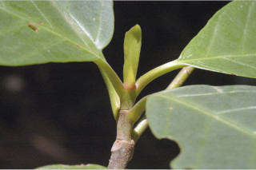
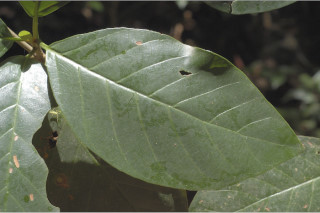
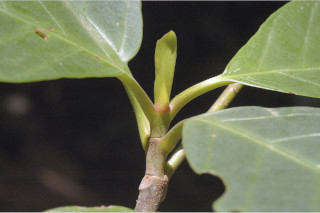
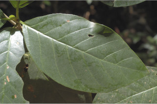
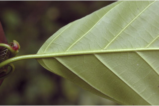
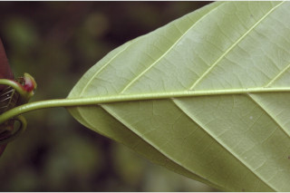
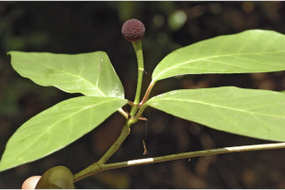
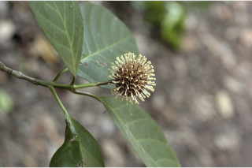
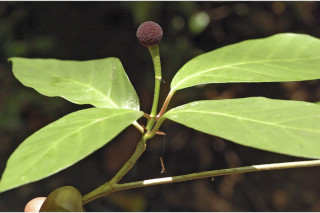
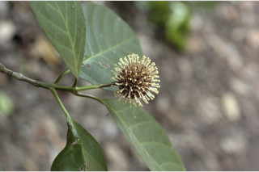

Trees up to 20 m tall.
20 ಮೀ. ಎತ್ತರದವರೆಗಿನ ಮರಗಳು.
Trees up to 20 m tall.
மரங்கள் 20 மீ. உயரம் வரை வளரக்கூடியது.
Bark grey, irregularly scaly; blaze yellow.
ತೊಗಟೆ ಬೂದು ಬಣ್ಣದಲ್ಲಿದ್ದು ಅನಿಯತವಾದ ಚಕ್ಕೆ ರೂಪದಲ್ಲಿರುತ್ತದೆ;ಕಚ್ಚು ಮಾಡಿದ ಜಾಗ ಹಳದಿ.
Bark grey, irregularly scaly; blaze yellow.
மரத்தின் பட்டை சாம்பல் நிறமானது, ஒழுங்கற்ற செதில்களாக உதிருபவை; உள்பட்டை மஞ்சள் நிறமானது.
Young branchlets slightly angular, terete when mature, glabrous.
ಕಿರುಕೊಂಬೆಗಳು ಕೊಂಚ ಮಟ್ಟಿಗೆ ಕೋನಯುಕ್ತವಾಗಿರುತ್ತವೆ,ಬಲಿತಾಗ ದುಂಡಾಗಿರುತ್ತವೆ, ರೋಮರಹಿತವಾಗಿರುತ್ತವೆ.
Young branchlets slightly angular, terete when mature, glabrous.
சிறிய நுனிக்கிளைகள் குறுக்குவெட்டுத் தோற்றத்தில் சிறிது கோணங்களுடையது, முதிரும் போது வளையமானது, உரோமங்களற்றது.
Leaves simple, opposite, decussate; stipules large, foliaceous, obovate, interpetiolar, caducous and leaving scar; petioles 1-2 cm long, planoconvex in cross section, glabrous; lamina 8.5-16 x 4-12 cm, elliptic, elliptic-obovate, apex acuminate, base acute to obtuse, margin entire, chartaceous, glabrous beneath; midrib flat above; secondary_nerves 6-8 pairs; tertiary_nerves distantly obliquely percurrent.
ಎಲೆಗಳು ಸರಳವಾಗಿದ್ದು ಕತ್ತರಿಯಾಕಾರದ ಅಭಿಮುಖ ಜೋಡನಾ ವ್ಯವಸ್ಥೆಯಲ್ಲಿರುತ್ತವೆ; ಕಾವಿನೆಲೆಗಳು ದೊಡ್ಡದಲ್ಲಿದ್ದು,ಎಲೆಗಳ ರೀತಿಯಿದ್ದು,ಬುಗುರಿಯ ಆಕಾರ ಹೊಂದಿದ್ದು, ತೊಟ್ಟುಗಳ ನಡುವೆ ಇರುತ್ತವೆ ಮತ್ತು ಉದುರಿದಾಗ ಗುರುತನ್ನು ಉಳಿಸುತ್ತವೆ;ತೊಟ್ಟು 1 ರಿಂದ 2 ಸೆಂ.ಮೀ.ವರೆಗಿನ ಉದ್ದವಿದ್ದು, ಅಡ್ಡ ಸೀಳಿದಾಗ ಸಪಾಟ ಪೀನ ಮಧ್ಯದ ಆಕಾರ ಹೊಂದಿದ್ದು, ರೋಮರಹಿತವಾಗಿರುತ್ತವೆ;ಪತ್ರಗಳು 8.5 -16 X 4-12 ಸೆಂ.ಮೀ. ಗಾತ್ರ ಹೊಂದಿದ್ದು ಅಂಡವೃತ್ತ, ಅಂಡವೃತ್ತ-ಬುಗುರಿಯ ಆಕಾರ ಹೊಂದಿದ್ದು, ಕ್ರಮೇಣ ಚೂಪಾಗುವ ಮಾದರಿಯ ತುದಿ, ಚೂಪಾದದುದರಿಂದ ಚೂಪಲ್ಲದ ಮಾದರಿವರೆಗಿನ ಬುಡ, ನಯವಾದ ಅಂಚು,ಕಾಗದವನ್ನೋಲುವ ಮೇಲ್ಮೈ ಹೊಂದಿದ್ದು ತಳಭಾಗದಲ್ಲಿ ರೋಮರಹಿತವಾಗಿರುತ್ತವೆ;ಮಧ್ಯನಾಳ ಪತ್ರದ ಮೇಲ್ಭಾಗದಲ್ಲಿ ಚಪ್ಪಟೆಯಾಗಿರುತ್ತದೆ; ಎರಡನೇ ದರ್ಜೆಯ ನಾಳಗಳು 6 ರಿಂದ 8 ಜೋಡಿಗಳಿರುತ್ತವೆ;ಮೂರನೇ ದರ್ಜೆಯ ನಾಳಗಳು ಹೆಚ್ಚಿನ ಅಂತರ ಹೊಂದಿದ್ದು ಓರೆಯಾಗಿ ಎಲೆಯ ದಿಂಡಿಗೆ ಅಡ್ಡವಾಗಿ ಕೂಡುತ್ತವೆ.
Leaves simple, opposite, decussate; stipules large, foliaceous, obovate, interpetiolar, caducous and leaving scar; petioles 1-2 cm long, planoconvex in cross section, glabrous; lamina 8.5-16 x 4-12 cm, elliptic, elliptic-obovate, apex acuminate, base acute to obtuse, margin entire, chartaceous, glabrous beneath; midrib flat above; secondary_nerves 6-8 pairs; tertiary_nerves distantly obliquely percurrent.
இலைகள் தனித்தவை, எதிரடுக்கமானவை, குறுக்குமறுக்கானவை; இலையடிச்செதில் பெரியவை, இலைகளைப் போன்றது, தலைகீழ் முட்டை வடிவானது, இலையடிச்செதில் இருஇலைக்காம்பிற்கு நடுவே (இண்டர்பீட்டியோலார்) உடையது, எளிதில் உதிரக்கூடியது மற்றும் தழும்புகளை ஏற்படுத்துகின்றன; இலைக்காம்பு 1-2 செ.மீ. நீளமானது, குறுக்குவெட்டுத் தோற்றத்தில் பிளேனோகான்வக்ஸ், உரோமங்களற்றது; இலை அலகு 8.5-16 x 4-12 செ.மீ., நீள்வட்ட வடிவானது, நீள்வட்டம்-தலைகீழ் முட்டை வடிவானது, அலகின் நுனி அதிக்கூரியது, அலகின் தளம் கூரியது முதல் மெட்டையானது, அலகின் விளிம்பு முழுமையானது, சார்ட்டோசியஸ், உரோமங்களற்றது; மையநரம்பு மேற்புறத்தில் அலகின் பரப்பிற்கு சமமானது; இரண்டாம் நிலை நரம்புகள் 6-8 ஜோடிகள்; மூன்றாம் நிலை நரம்புகள் தளம் நோக்கிய இணையான அகன்ற பெர்க்கரண்ட்..
Inflorescence axillary or terminal, globose head; flowers sessile, purple.
ಪುಷ್ಪಮಂಜರಿಗಳು ಅಕ್ಷಾಕಂಕುಳಿನಲ್ಲಿನ ಅಥವಾ ತುದಿಯಲ್ಲಿನ ಗೋಳಾಕಾರ ಮಂಜರಿ ಮಾದರಿಯವು;ಹೂಗಳು ತೊಟ್ಟುರಹಿತವಾಗಿದ್ದು ಕೆನ್ನೀಲಿ ಬಣ್ಣದಲ್ಲಿರುತ್ತವೆ.
Inflorescence axillary or terminal, globose head; flowers sessile, purple.
மஞ்சரி இலைக்கோணங்களில் காணப்படுபவை அல்லது தண்டின் நுனியில் காணப்படும், கோள வடிவமானது சீரமஞ்சரி; மலர்கள் காம்பற்றது, பர்புள் நிறமானது.
Capsule arranged in globose heads, each with 2-folicular cocci; seeds many, flat, winged.
ಸಂಪುಟ ಫಲಗಳು ದುಂಡಗಿನ ಗೋಳಾಕಾರದಲ್ಲಿ ಜೋಡನೆಯಾಗಿರುತ್ತವೆ,ಪ್ರತಿಯೊಂದು ಸಂಪುಟ ಫಲದಲ್ಲಿ 2 ಮರಿ ಸೋತಫಲಗಳಿರುತ್ತವೆ;ಬೀಜಗಳ ಸಂಖ್ಯೆ ಹಲವಾರು,ಚಪ್ಪಟೆಯಾಗಿದ್ದು ರೆಕ್ಕೆಯುಕ್ತವಾಗಿರುತ್ತವೆ.
Capsule arranged in globose heads, each with 2-folicular cocci; seeds many, flat, winged.
வெடிகனி (கேப்சியூல்) கோள வடிவமான சீரமஞ்சரியில் அமைந்தவை, ஒர் கனி இரண்டு இலைப் போன்ற அமைப்பு கொண்ட உருண்ட வடிவுடையது (காக்கை); விதைகள் எண்ணற்றது, தட்டையானது, இறகுடையது.

 



 



 


